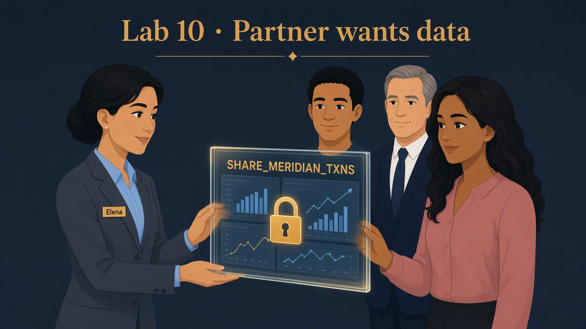

Nora’s credit union needs a window — not a USB dump
Read Teach first before provider SQL.
Partner Nora needs read-only txn metrics in her Snowflake account.
Elena publishes a secure view and a share — minimum columns, no BRONZE_LANDING vault, Nora pays her own compute.
Business problem
Nora Patel’s credit union asked for a weekly CSV of transactions. Marcus refuses email attachments — compliance nightmare, stale by Friday, no audit trail.
Solution you will buildSILVER_CURATED.V_SHARE_TXNS (secure, column-trimmed) + share object SHARE_MERIDIAN_TXNS
with grants on database, schema, and view. Production adds Nora’s account locator to the share.
Before
Partner dump truck — weekly CSV, stale, no audit.
After
Secure share window — live read, Nora’s warehouse.
See it — don’t memorize definitions
Nora needs a window — not a file on a truck.
Avoid
CSV email / export
Data leaves Meridian — compliance nightmare.
USB dump ✗ stale by Friday
Internal only
Clone (Lab 09)
Same-account QA fork — not cross-org.
Dev sandbox ≠ Nora’s credit union
Lens
V_SHARE_TXNS secure view
Trim columns — hide join logic from consumer.
TXN_ID · STATUS · AMOUNT no BRONZE_LANDING vault
Window
SHARE_MERIDIAN_TXNS
Live SELECT in Nora’s account — she pays compute.
grants on DB · schema · view
Provider · Meridianbronze_landing.txn_eventsNever in the share
Governed lensV_SHARE_TXNSTXN_ID · CLIENT_ID · STATUS · AMOUNT
Consumer · NoraHer WH + rolesSELECT live data · she pays compute

Picture · Sealed window for Nora
Live read-only view through a share — not a USB dump of BRONZE_LANDING.
Saturday · partner call
Nora: “We just need txn counts by status — not your client vault.”
Elena: “Secure view trims columns; share is the sealed window. You run queries in your account — Meridian doesn’t burn credits for your dashboards.”
0
Privilege repair (if CREATE SHARE fails)
What this does
Only ACCOUNTADMIN can grant CREATE SHARE and related powers to ROLE_BANK_LAB_ADMIN. Skip if Lab 00 smoke test already passed.
SQL · ACCOUNTADMIN grants (part 1)
USE ROLE ACCOUNTADMIN;
GRANT CREATE ROLE ON ACCOUNT TO ROLE ROLE_BANK_LAB_ADMIN;
GRANT USAGE ON WAREHOUSE WH_BANK_XS TO ROLE ROLE_BANK_LAB_ADMIN WITH GRANT OPTION;
GRANT OPERATE ON WAREHOUSE WH_BANK_XS TO ROLE ROLE_BANK_LAB_ADMIN WITH GRANT OPTION;
GRANT APPLY MASKING POLICY ON ACCOUNT TO ROLE ROLE_BANK_LAB_ADMIN;
GRANT APPLY ROW ACCESS POLICY ON ACCOUNT TO ROLE ROLE_BANK_LAB_ADMIN;
GRANT EXECUTE TASK ON ACCOUNT TO ROLE ROLE_BANK_LAB_ADMIN;
GRANT CREATE SHARE ON ACCOUNT TO ROLE ROLE_BANK_LAB_ADMIN;
SQL · bind role to you + smoke test
SET uname = (SELECT CURRENT_USER());
GRANT ROLE ROLE_BANK_LAB_ADMIN TO USER IDENTIFIER($uname);
USE ROLE ROLE_BANK_LAB_ADMIN;
CREATE ROLE IF NOT EXISTS ROLE_BANK_SMOKE_TMP COMMENT = 'temp smoke test';
DROP ROLE IF EXISTS ROLE_BANK_SMOKE_TMP;
SQL · ensure schemas exist
USE DATABASE MERIDIAN_BANK;
CREATE SCHEMA IF NOT EXISTS BRONZE_LANDING;
CREATE SCHEMA IF NOT EXISTS SILVER_CURATED;
CREATE SCHEMA IF NOT EXISTS RISK_CTRL;
CREATE SCHEMA IF NOT EXISTS GOLD_MART;
CREATE SCHEMA IF NOT EXISTS FILE_IN;
CREATE SCHEMA IF NOT EXISTS UTILS;
SELECT 'Meridian Bank privilege repair OK' AS status;
✓ Matches sql/00_privilege_repair.sql — then continue as ROLE_BANK_LAB_ADMIN
1
Set provider session
SQL · context
USE ROLE ROLE_BANK_LAB_ADMIN;
USE WAREHOUSE WH_BANK_XS;
USE DATABASE MERIDIAN_BANK;
2
Create the secure view (column minimum)
What this does
Exposes only txn fields Nora needs — no BRONZE_LANDING.CLIENTS, no SSN, no email.
Why SECURE
Consumers cannot inspect view SQL to reverse-engineer hidden joins or columns.
SQL · V_SHARE_TXNS
CREATE OR REPLACE SECURE VIEW SILVER_CURATED.V_SHARE_TXNS AS
SELECT TXN_ID, CLIENT_ID, STATUS, AMOUNT
FROM bronze_landing.txn_events;
✓ View under SILVER_CURATED — four columns only
3
Create the share object
What this does
Empty share container — grants in the next step attach Meridian objects to it.
SQL · share container
DROP SHARE IF EXISTS SHARE_MERIDIAN_TXNS;
CREATE SHARE SHARE_MERIDIAN_TXNS;
4
Grant database + schema + view to the share
What this does
Consumers need USAGE on database and schema, then SELECT on the view. Without all three, Nora sees nothing.
SQL · share grants
GRANT USAGE ON DATABASE MERIDIAN_BANK TO SHARE SHARE_MERIDIAN_TXNS;
GRANT USAGE ON SCHEMA SILVER_CURATED TO SHARE SHARE_MERIDIAN_TXNS;
GRANT SELECT ON VIEW SILVER_CURATED.V_SHARE_TXNS TO SHARE SHARE_MERIDIAN_TXNS;
✓ Share lists granted objects in Snowsight (provider account)
5
Verify + Nora’s next step
What you should see
SHOW SHARES returns SHARE_MERIDIAN_TXNS. Production: ALTER SHARE … ADD ACCOUNTS = NoraOrgAccount; Nora creates a database from the share in her account.
SQL · proof
SHOW SHARES LIKE 'SHARE_MERIDIAN_TXNS';
SELECT 'Lab 10 share ready for Nora (add consumer account next)' AS status;
✓ Status row · parity with sql/10_share_provider.sql
Elena’s wrap-up (say this out loud)
“Nora needed partner metrics without USB-era leaks. I built SILVER_CURATED.V_SHARE_TXNS as a secure view with least columns — no PII vault — and published it through SHARE_MERIDIAN_TXNS with database, schema, and view grants.
Share beats weekly CSV because data stays live and Nora pays her own warehouse; clone is for internal QA, not cross-org delivery.
Outcome: Nora queries governed txns in her account; Meridian keeps control on the provider side.”